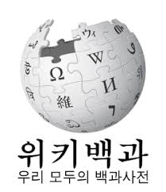

혹은 전화로 연락주세요
혹은 전화로 연락주세요나무위키 홈페이지

위키백과 홈페이지네이버 지식백과 홈페이지
1. 개요[편집] 우유(牛乳, milk)는 소의 젖이다. 소젖, 쇠젖 혹은 타락(駝酪) 등으로도 불린다. 본래 송아지의 성장을 위한 것이지만 초기의 인류는 대부분이 맑은 물을 구하기 어려운 지역에서 살아왔던 탓에 가축으로 기르는 동물의 젖을 먹으려 시도했고, 나중에는 돌연변이가 생기면서 대다수의 인류도 다른 동물의 젖을 소화할 수 있는 방향으로 진화했다. 젖소 역시 자기가 낳은 송아지에게 먹일 양보다 훨씬 많은 젖을 생산하도록 개량, 육종되었다. 다양한 영양소가 골고루 들어 있는 만큼 그대로 마시기도 하며, 전통적으로 동아시아권보다 낙농업이 발달했던 유럽 및 중동, 중앙아시아의 식생활을 지탱하는 중요한 식재료로 기능해 왔다. 오늘날 우유는 치즈, 버터, 크림, 요구르트 등의 다양한 유제품으로 가공되어 널리 소비된다. 빵과 과자를 만들 때도 다방면에서 사용한다. 2. 영양[편집] 대략적으로 물 87%, 지방 4%, 단백질 3.5%, 유당 5%, 미네랄 0.7% 정도의 성분이 콜로이드 형태로 구성되어 있다. 특히 비타민 B군이 풍부하다. 하지만 지용성 비타민인 비타민 A, 비타민 D, 비타민 E는 극히 적고, 비타민 C는 원유 살균 과정에서 파괴된다. 지방이 상당히 포함되어 있음에도 수분과 분리된 층을 이루지 않은 것은 유화 상태에 있기 때문이다. 영양적으로 우수한 식품은 특정 영양소가 많이 함유된 것보다도 영양소 조성이 균일한 것이 더 좋다. 이를테면, 밥을 주식으로 먹지만 여러 반찬을 곁들이는 이유는 바로 균형 있게 영양소를 공급하기 위함이다. 또한 구성 비율로 보면 적어 보일지 몰라도, 이는 단순히 우유의 영양소 조성 함량비를 뜻할 뿐이다. 사람이 요구하는 영양소 함량을 충족하는 데는 충분하려면 양이 중요한데, 우유의 당은 유당이 대부분으로, 저 유당으로 인한 소화 장애가 좀 문제이긴 하다. 유당문제는 우유량을 하루 약 200 mL로 적당히 마신다면 문제가 적다는 보고가 있다. 이 경우 단백질 함량은 7 g 내외가 된다. 유당이 적은 발효 유제품이나 최근 유당을 제거한 시유를 먹는 것도 좋다고 하나, 우유의 맛이 좋아 가성비를 따지지 않는 사람이라면 모를까 이렇게까지 해서 우유를 섭취해야 하는지 의문을 품는 사람들이 많다. 또, 필수지방산이 고루 함유되어 있고 무엇보다 콜레스테롤 함량도 적다. 미국낙농학회지에 발표된 연구결과에 의하면, 우유에는 다이어트에 도움이 되는 공복 리놀레산(CLA)이 존재한다. 우유에는 포화지방만 있는 것이 아니고 불포화지방도 전체 지방의 30% 정도가 존재하여 몸에 좋다. 적당한 포화지방 섭취는 호르몬의 균형과 면역계 유지를 위해 도움이 된다. 게다가 단백질도 적지 않게 있어 우유를 섭취했을 때에 포만감을 유도하여 식욕을 어느 정도 통제하는 효과를 기대할 수 있다. 이와 같은 이유로 우유는 다이어트와 당뇨 환자에게 도움이 된다는 많은 연구 결과들이 발표되었다.# 물론, 대다수의 연구 결과는 각국의 낙농협회 의뢰로 연구되어 발표되었다는 것을 유의해야 한다. 트립토판, 멜라토닌이란 수면 유도 성분이 함유되어 있어서 우유를 따뜻하게 데워 먹으면 불면증에 좋다. 꿀을 조금 타서 마시면 더욱 효과가 좋다고. 참고로 위 두 성분은 우울장애 예방에도 효과가 있다. 우유는 매운맛을 잡아주는 효과가 아주 탁월하다. 그 이유는 캡사이신이 지용성을 띠기 때문이다. 그 덕에 매운 음식을 먹을 때 같이 먹으면 속이 덜 쓰리다. 3. 생산[편집] 젖소들은 젖을 생산하는 능력이 우수한 젖소 위주로 육종하여 개량된 개체들로, 젖을 워낙 많이 생산하기에 하루라도 안 짜주면 유방염에 걸릴 수가 있다. 젖 짜는 기계가 있으면 젖소가 스스로 젖 짜는 기계에 젖을 대고 젖을 짜낸다. 출산과 최적 혼합 사료 등 온갖 방법을 다 동원하면 1마리 기준 하루 58리터까지도 뽑아낼 수 있다. 현실적인 문제 때문에 30리터 전후로 뽑아내지만. 소도 인간과 같이 임신과 출산을 해야 젖이 나오기 때문에 젖소들은 계속해서 강제 임신과 출산을 당한다. 출산한 송아지는 보통 우유 생산, 번식용의 소수를 제외하면 바로 도태(죽임)당하거나 송아지 고기로 판매된다. 유럽 기준, 적어도 기원전 3000년경부터 우유 생산을 염두에 두고 육종되어 왔다. 지금이야 홀스타인 종과 같은 '모든 에너지를 젖 만드는 데 사용하는 수준'의 소가 있지만 옛날에는 '우유만' 생산하도록 하는 소는 거의 없었고, 그러다보니 동서양 모두에서 안 좋은 소리를 많이 들었다. 특히 조선 시대에는 '임금이나 먹을 수 있는 특식'으로 취급되었지만 동시에 까임이 대상이 되기도 했다. 임금이 아침에 먹는 죽 중에 우유를 넣어 만드는 '타락죽'이 있었는데, 이걸 가지고 안 그래도 소가 사람을 위해 평생을 고생하는데, 그 새끼가 먹을 것까지 빼앗아야 하냐며 상소를 올렸으며, 농사철이 다가오면 타락죽 만드는 것을 금지하기도 했다. 육식주의자였던 세종은 육류 못지않게 우유도 좋아해서 고려 시대 때 설립된 '유우소(乳牛所)'를 그대로 유지하면서 관원 인원을 200여 명으로 확대시켰는데, 신하들이 "다른 곳에서도 충분히 구할 수 있는데 200명이나 써서 우유를 관리하는 건 너무 인력 낭비가 극심하다"는 주장을 멈추지 않았다. 유제품을 만드는 일이 어렵다보니 여기에 등록하면 병역이 면제되었는데, 이걸 노리고 자격도 없으면서 여기에 등록하는 비리가 속출했다. 결국 유우소를 폐지하고 '예빈시(禮賓寺)'[1]에서 대신 우유를 관리하도록 한다. 그런데, 이번엔 유학자들이 또 덤볐다. 송아지의 젖을 빼앗아 먹는 것은 유교 사상에 어긋난다 하여 반대했다는 일화도 전해진다. 영조는 이걸 이유로 타락죽을 금지했다. # "나이 들어서까지 젖을 먹는 생물은 인간밖에 없다"며 "자연의 섭리를 거스르는 일"이라는 주장이 있지만, 소의 태반 같이 태아의 생존을 위한 양분이 들어 있는 부위가 어떻게 사용되는가를 생각해 보면 이 주장이 헛소리라는 것을 알 수 있다. 로열젤리 같은 건 아예 여왕벌만 먹는 거고 따지고 보면 계란도 유생의 성장을 위한 물질이 한두 가지가 포함된 게 아니기 때문. 고양이나 다른 포유류가 성장하고도 우유를 먹는다고 쉽게 착각하는 부분이 있는데, 이 부분은 유당불내증 문서 참조. 자연의 섭리를 거스르는 것은 아니어도 애당초 사람 먹으라고 나오는 게 아닌 건 맞기 때문에 몸에 맞지 않는 사람이 나올 수 있다. 비유량은 개체마다 다르나 분만 후 평균 6주 때의 비유량이 제일 많고 이후 점차 감소한다. 또한 젖소가 젖을 항상 내는 게 아니다. 보통 분만 2달 전에 건유를 시키는데, 태아 발육과 유선 세포의 회복 그리고 다음 착유를 위한 영양소 축적을 위해서이다. 종이팩, 플라스틱병, 유리병 등에 포장되어 팔린다. 맛은 유리>플라스틱>종이 순이라는 의견이 있지만 가격도 마찬가지. 애초에 현재 음료 포장 방법으로 최상은 병이고, 그다음이 비닐 포장이고, 마지막이 캔이다. 문제는 보관과 유통의 편의가 정반대순이라는 것. 그래서 맛에 민감한 사람들은 우유같이 맛이 섬세한 형태는 물론이고 콜라 같은 탄산음료마저도 병을 고집하기도 한다. 다만 가격도 병부터 시작해서 차례대로 비싸다는 게 문제라서 비율이 상당히 줄어들고 있는 현실. 특히 우유는 캔의 주석과 반응해 부식하는 문제 등 때문에 캔으로 포장하는 것이 불가능하다. 우유의 살균 방법 중 하나로 pasteurization(pæ̀stʃəraizéiʃən, -tər-, 패스처라이제이션)이라는 방식이 있는데, 파스퇴르가 창안한 방법이라 "pasteurization"이라는 이름이 붙었다. 저온 살균, 고온 살균, 초고온 살균 등이 있는데 초고온 살균은 섭씨 130도에서 1~2초간 살균하므로 유통기한이 길고 공정 시간이 단축되지만 유단백의 변성, 지방의 산패 문제로 인해 저온 살균에 비해 맛이 심하게 떨어지며 치즈를 만들 수 없다. 그리고 시중에 유통되는 팩우유는 대부분 초고온 살균 방식이다. 한편 저온 살균은 60~65도에서 30~40분간 살균하는 방식으로 특유의 고소한 맛이 살아 있지만 상대적으로 가격이 비싼 편이다. 맛과 영양을 위해 균을 완전히 박멸하지 않는 파스퇴르법과는 달리 완전히 멸균한 멸균우유도 있다. 흔히 마시는 윗부분이 삼각형인 종이팩 우유는 살균 우유이며, 두유처럼 직육면체형의 테트라팩에 있는 우유가 멸균우유. 균의 유무 말고 성분 차이는 없으며, 멸균우유의 유통기한이 월등히 길다. 유통기한을 신경 쓰기 싫다면 멸균우유를 애용하자. 다만 후술하듯이 우유는 오래 방치하면 유지방이 분리되는데, 유지방이 분리된 우유는 맛이 균일하지 않고, 또 분리된 유지방의 상당량이 용기 벽면에 붙기 때문에 전체적으로 싱거워지므로 멸균우유를 오래 두고 맛있게 먹으려면 주기적으로 흔들어 줘야 한다. 매우 긴 유통기한 덕분에 멸균우유는 수입품도 구할 수 있다. 수입 멸균우유의 경우 가성비가 높아서 유제품 가격이 상승하면서 대체재로 각광받는다. 중국의 경제 발전으로 인한 수요 급증과 사료 값 상승으로 인해 전 세계적으로 유제품 가격이 상승하고 있다. 한편 그 중국에서는 멜라민 파동를 만든 악명 높은 사례가 있고 한국에는 그 우유로 만든 가공품이 들어와서 난리가 난 적도 있다. 군납 우유는 해당 지역의 낙농 조합에서 보급을 받기 때문에 지역마다 들어오는 우유가 다르다. 의외로 군납 우유는 철저하게 소독을 하기 때문에 1주일 정도 상온에 방치한 걸 마시는 정도로는 훈련을 뺄 수 없다. 훈련장에서 하루 동안 설사하는 선에서 끝난다. 군대에서는 일반 시중에 보기 힘든 250 mL짜리 우유가 보급된다. 2004~2005년 즈음 부대에서 경험한 사람에 의하면, 군대리아를 먹을 때 부족하다고 느끼던 200 mL 우유가 어느 날 250 mL로 바뀌었는데, 만족감이 상당히 올라갔다. 부대가 위치한 축산업협동조합에서 생산한 우유를 납품받고 1일 1팩씩 주로 아침 식사 때 나온다. 경기도 지역이면 서울우유, 대구광역시면 대구우유, 부산광역시면 부산우유 이런 식으로... 그러나 2014~2015년 들어서 군대에서도 우유 배식을 감축하면서 200 mL로 줄어들었다. 이것이 공급 촉진하려고 250 mL이라는 소문이 있었는데, 시대가 바뀌어서 우유를 꺼리는 사람들이 목소리를 키우면서 일괄 배식에 부정적이고 또 마침 다른 식재료 값이 폭등하면서 여기서 단가를 빼서 조정했다. 그래서 관련 단체에서 항의 겸 시위를 하기도 했다. 예전에 대관령 목장이 어쩌고 하는 광고 덕분에 마치 우유 회사마다 전용 목장이 있는 것처럼 생각하기 쉬운데 꼭 그렇지만은 않다. 그냥 조합에서 다 모은 다음에 회사에 공급하는 방식이 많다.